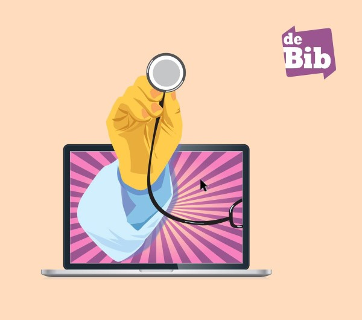

Digitale klusjesman
Je komt met je probleem of vraag en ik bereid de oplossing voor en implimenteer deze voor je.
Ook op verplaatsing, regio Gent.
Tarief: €40 per uur.
Training en begeleiding
Persoonlijke training en begelkeiding op maat over het gebruik van jouw apparaten en software, zodat je zelfverzekerd en efficiënt kunt werken.
Tarief: €40 per uur.

Vrijwiligerswerk (Digidokter)
Je kan bij mij terrecht in de bibliotheek van Oosterzele.
Neem contact op met de bibiliotheek om je sessie in te plannen via 09 362 81 17 of bibliotheek@oosterzele.be.
Deze sessies zijn gratis.